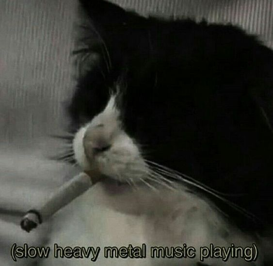

emo mruczek

Hello!Name's Felix, a twenty-something fella from Poland.My current special interests are bare-metal programming on stm32, electronics and Linux.
I'm fond of cross-stitching, baking and taking care of my numerous succulents. I can appreciate a good sci-fi or danmei. I'm also learning Japanese cuz I can't stand mistranslations!
This site is still a work in progress. Soon you'll be able to learn more about me here...